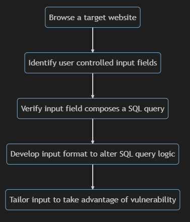

Software Development Lifecycles
This section is dedicated to software development lifecycles and the integration of security practises into them, for the development of secure practises.
Glossary
Development Operations (DevOps)
"A set of practices for automating the processes between software development and information technology operations teams so that they can build, test, and release software faster and more reliably. The goal is to shorten the systems development life cycle and improve reliability while delivering features, fixes, and updates frequently in close alignment with business objectives." ( NIST )
Development, Security and Operations (DevSecOps)
"DevSecOps is the term that denotes a culture and set of practices with automation tools to drive increased collaboration, trust, shared responsibility, transparency, autonomy, agility, and automation across the key stakeholders responsible for delivering software, including development, operations, and security organizations." ( NIST, 2022 )
Software Development Life Cycle (SDLR)
"A formal or informal methodology for designing, creating, and maintaining software (including code built into hardware)." ( NIST )
Examples
The Waterfall Lifecycle
Foundational Readings
-
Royce, W. (1970)
'Managing the Development of Large Software Systems'.
Technical Papers of Western Electronic Show and Convention (WesCon).
Los Angeles, USA, 1970.
- Royce builds upon his experience and expresses his advice for managing large software
systems. He introduces the waterfall model, and emphasises the importance of documentation.
The Agile Lifecycle
Foundational Readings
-
Beck, K., Beedle, M., Bennekum, A., Cockburn A,
Cunnigham, W., Fowler, M., Grenning, J., Highsmith, J., Hunt, A., Jeffries, R.,
Kern, J., Marick, B., Martin, R., Mellor, S., Schwaber, K., Sutherland, J.
& Thomas, D. (2001)
Manifesto for Agile Software Development. Available from:
here.
- Beck et al. introduce the Agile Manifesto, which outlines the core values of the
Agile software development lifecycle.
-
Cockburn. A (2004)
A Human-Powered methodology For Small teams, including The Seven
Properties of Effective Software Projects. Addison-Wesley. ISBN: 978-0201699470
here.
- Cockburn, who wrote the original Crystal Clear guide in 1991, outlines
the Crystal Clear framework. The framework consists of a seven core principles to
software development, that are designed to be adapted to the needs of the team.
-
Sutherland, J. & Schwaber, K. (2020)
The 2020 Scrum Guide^TM. Available from
here.
- Sutherland and Schwaber, who wrote the original Scrum Guide in 2010, outline
the Scrum framework. The framework consists of a 'scrum master' fostering a
particular environment that facilitates incremental value
production during 'sprints', that consititute an iterative,
adaptive approach to completing complex tasks.
Security-Centered Readings
-
Mougouei, D., Sani, N. & Almasi, M. (2013)
S-Scrum: a Secure Methodology for Agile Development of Web Services.
World of Computer Science and Information Technology Journal (WCSIT).
3(1): 15-19.
- Mougouei et al. describe a variation of Scrum that they call
'S-Scrum' (Secure Scrum).
It involves the insertion of additional planning spikes into the
Scrum process. They go further and formalise the process using
a non-deterministic finite automaton; and
a context free grammar is proposed for describing process steps.
-
Pohl, C. & Hof H. (2015)
'Secure Scrum: Development of Secure Software with Scrum'.
The Ninth International Conference on Emerging Security Information,
Systems and Technologies (SECURWARE2015).
Venice, Italy, 2015.
- Pohl and Hof describe a variation of the Scrum that they call
'Secure Scrum' (too). It
introduces the use of 's-tags' to mark user stories with security concerns.
-
Sharma, A. & Bawa, R. (2020)
Identification and integration of security activities for
secure agile development.
International Journal of Information Technology 14(2): 1117-1130.
- Sharma and Bawa compare four security engineering processes: CLASP,
Common Criteria, Cigital Touchpoints and Microsoft's SDL, identify
security actvities using a systematic literature review, and propose a
dynamic integration algorithm for integrating security activities into
an agile process.
Peer Discussion
This was my initial submission to a discussion activity, in which we were asked to discuss which UML model is most suitable for designing security solutions to a chosen vulnerability:
"'Injection' attacks made it onto OWASP's most recent Top10 software vulnerabilities, which were decided by considering how exploitable the vulnerabilities are and how impactful those exploits could be[1]. Being somewhat familiar with SQL, I wanted to discuss SQL injections specifically.
Description of SQL Injections
OWASP links each vulnerability to Mitres' Common Weakness Enumeration entry of it, a database which gives the following description of an SQL attack:"[The use of] user-controllable inputs, [so] the generated SQL query can cause those inputs to be interpreted as SQL instead of ordinary user data"[2].
To understand the potential impact of SQL injections, it's standard to relate them to the CIA triad of ideal information assurances [3].
1. Confidentiality ~ SQL injections can facilitate the exposure of sensitive data.
2. Integrity ~ SQL injections can facilitate the alteration of data.
3. Availability - SQL injections can facilitate the destruction of data.
The following flow chart aims to show how malicious SQL injections are performed:
OWASP provides a theoretical example of an SQL injection[4], for the curious. Do you know of any ways to prevent SQL injections?
Model-based Security
Being accustomed to UML, it would be really convenient to be able to model security vulnerabilities using it. By modelling security vulnerabilities, we are more likely to remember to implement security protection in our software when implementing those models.
One way security proactivity is achievable, is by using UML extension entities such as stereotypes and tags. There are multiple variations of how these might be formatted, such as using the Object Constraint Language (OCL)[5], or not [6]. As OCL looks intimidating, I think it's less likely to be adopted by new developers, who are most likely to be unaware of security vulnerabilities, so I definitely favour the friendlier version.
The following activity diagram aims to be an example of a visually informative use of stereotypes and tags to
indicate a security vulnerability. The stereotype and tag construction
I've used is one that's been recommended [7]. Specifically, in the diagram, the stereotype is '<

Out of all possible UML diagrams, I think activity diagrams are the most generally useful diagrams for marking security vulnerabilities. Some of the reasons for that include:
- The granularity of detail can be finetuned to suit either developers or other stakeholders.
- Activity diagrams are behaviour diagrams, so vulnerabilities can be situated within the flow of the software. As a developer, I would find that extra helpful.
There's definitely arguments to be made for other diagrams such as class and package diagrams, which catalogue some of the components for developers to make use of, but at this point in time, I would somewhat validate those diagrams by referring to an activity diagram. Do you find activity diagrams useful?
Software Development Lifecycles
Lastly, I wanted to bring up the task of integrating model-based security into a software development lifecycle. In a secure scrum framework, would it be beneficial to link s-tags[8] to specific activities on an activity diagram associated with security vulnerabilities, for tracking security developments?
References
[1] OWASP. (2021) OWASP TOP10. Available from: https://owasp.org/Top10/ [Accessed 4 May 2023].
[2] MITRE. (2023) CWE-89: Improper Neutralization of Special Elements used in an SQL Command ('SQL Injection'). Available from: https://cwe.mitre.org/data/definitions/89.html [Accessed 4 May 2023].
[3] CIS. (2023) Election Security Spotlight - CIA Triad. Available from: https://www.cisecurity.org/insights/spotlight/ei-isac-cybersecurity-spotlight-cia-triad [Accessed 4 May 2023].
[4] OWASP. (2023) Testing for SQL Injection. Available from: https://owasp.org/www-project-web-security-testing-guide/latest/4-Web_Application_Security_Testing/07-Input_Validation_Testing/05-Testing_for_SQL_Injection [Accessed 4 May 2023].
[5] Salas, P., Krishnan, P. & Ross, K. (2007) 'Model-Based Security Vulnerability Testing', 2007 Australian Software Engineering Conference (ASWEC'07). Melbourne, Australia, 2007. New York: IEEE. 284-296. Available from: https://doi.org/10.1109/ASWEC.2007.31 [Accessed 4 May 2023].
[6] Jürjen, J. (2002) 'UMLsec: Extending UML for Secure Systems Development', in: Jézéquel, J., Hussmann, H. & Cook, S. (eds) <
[7] Peralta, K., Orozco, A., Zorzo, A., & Oliveira, F. (2008) 'Specifying Security Aspects in UML Models', Proceedings of the Workshop on Modelling Security (MODSEC08) held as part of the 2008 International Conference on Model Driven Engineering Languages and Systems (MODELS). Toulouse, France, 2008. Germany: CEUR-WS. Available from: https://ceur-ws.org/Vol-413/ [Accessed 4 May 2023].
[8] Pohl, C. & Hof, H. (2015) 'Secure Scrum: Development of Secure Software with Scrum', The Ninth International Conference on Emerging Security Information, Systems and Technologies - SECURWARE 2015. Venice, Italy, 2015. Available from: https://doi.org/10.48550/arXiv.1507.02992 [Accessed 4 May 2023].
Bibliography
OMG. (2014) About the Object Constraint Language. Specification Version 2.4. Available from: https://www.omg.org/spec/OCLF [Accessed 4 May 2023].
OMG. (2017) About the Unified Modelling Language. Specification Version 2.5.1. Available from: https://www.omg.org/spec/UML/2.5.1/About-UML#document-metadata [Accessed 4 May 2023].
To read the responses to this post,and my response to the post of others, click here.